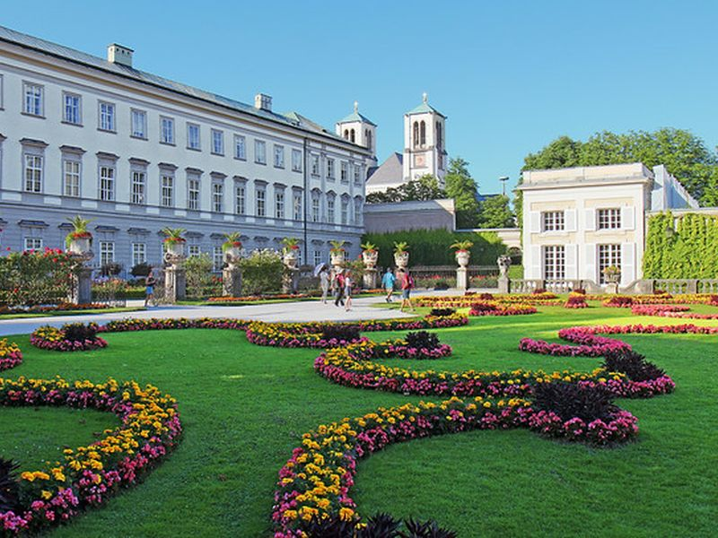
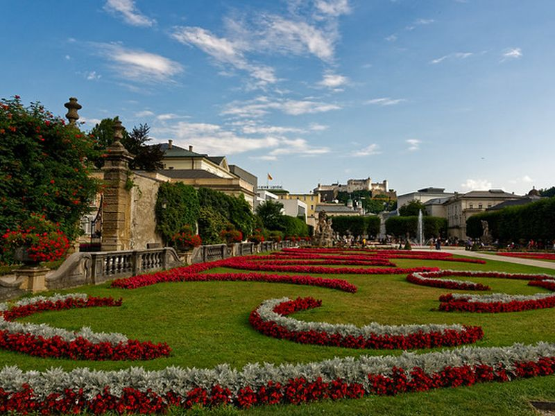
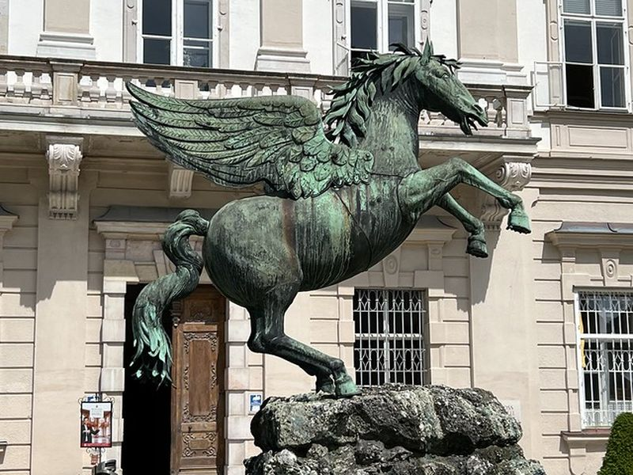
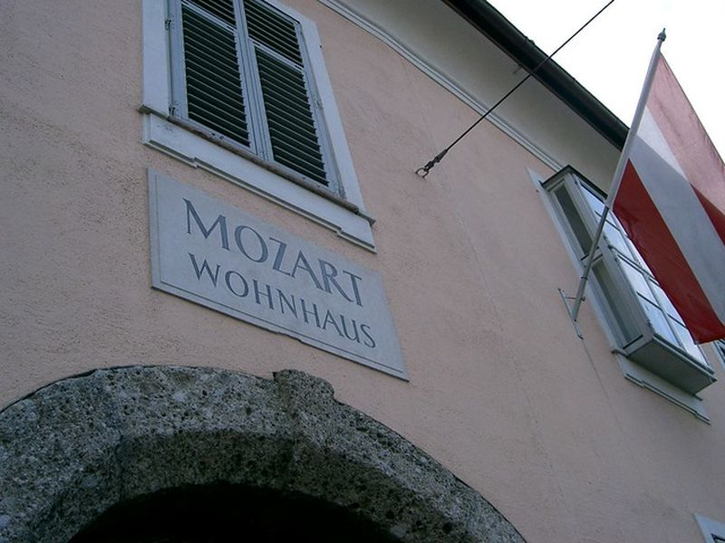
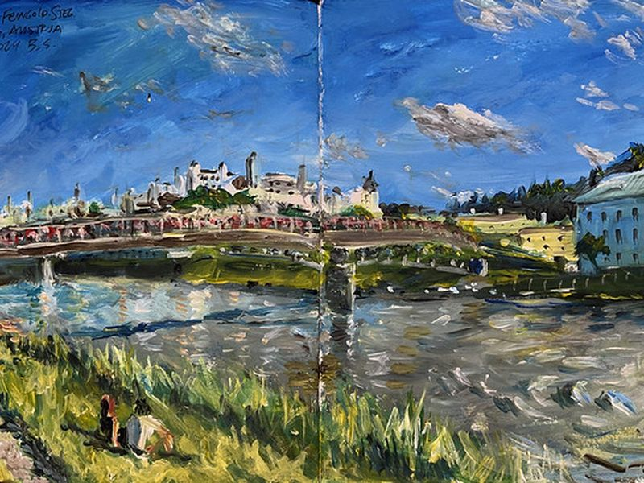
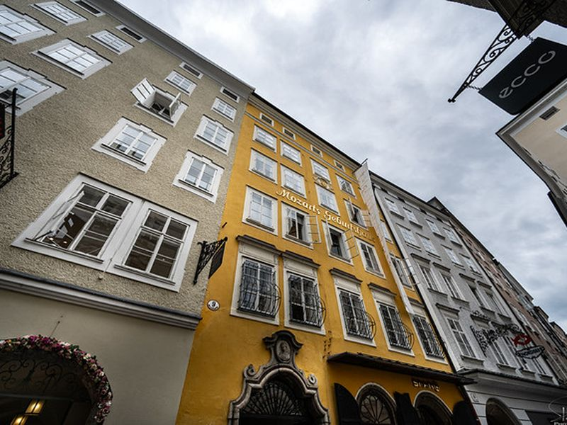
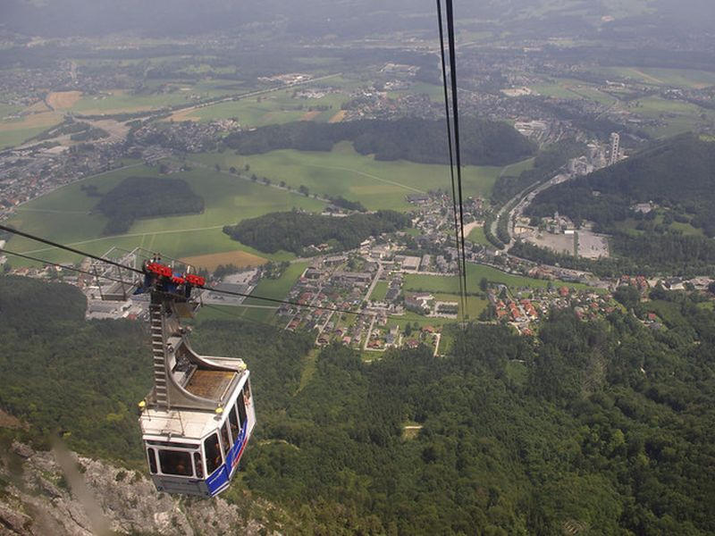
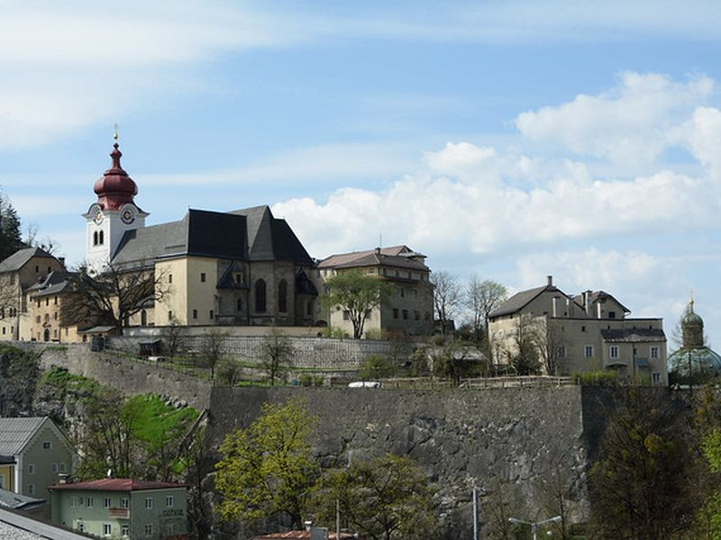
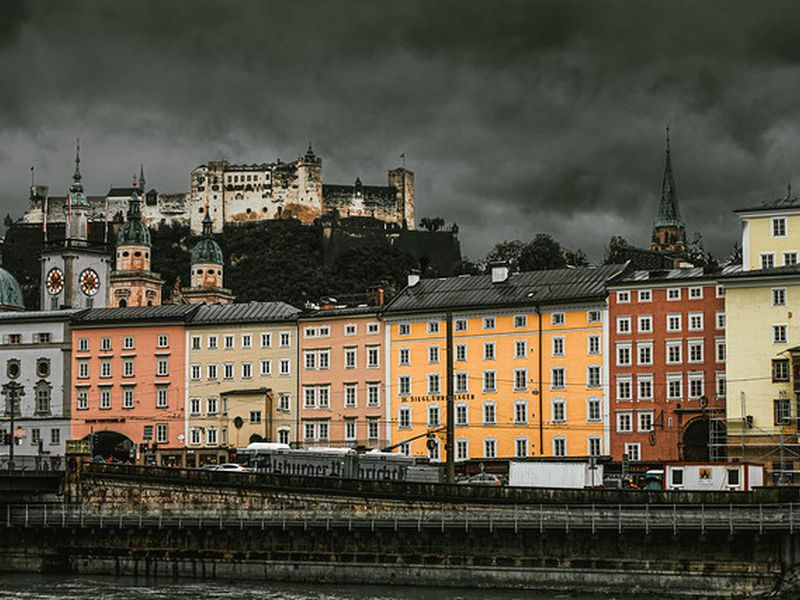

Explore Salzburg
A Brief History
Salzburg developed as an independent prince-bishopric on the Salzach River before integration into Austria in the 19th century. Its fortress, Baroque churches, and residential quarters reflect ecclesiastical rule and later association with Wolfgang Amadeus Mozart. Alpine hills frame a compact historic core north of the Alps.
Attractions Map
Top Sights & Activities

Mirabell Palace
Mirabell Palace was built by Prince-Archbishop Wolf Dietrich von Raitenau in the early 17th century as a residence beside the Salzach. Its Marble Hall and state rooms host concerts and civic events. The palace faces gardens that extend toward the fortress hill across the river.

Mirabell Gardens
Mirabell Gardens were laid out in the 18th century as formal terraces, statues, and parterres below the palace. Geometric beds and fountains frame views toward Hohensalzburg Fortress and the cathedral domes. The gardens remain open public space on the right bank of the Salzach.

Pegasusbrunnen
The Pegasus Fountain stands in Kapitelplatz below the cathedral and fortress approach. Baroque sculpture represents the mythical horse and forms a focal point on the square used for markets and events. The site lies along the pedestrian route through Salzburg's ecclesiastical center.

Mozart-Wohnhaus
Mozart's residence on Makartplatz was the family home from 1773 to 1787 after leaving the birth house. Exhibits present instruments, documents, and domestic life during Mozart's years in Salzburg and early Vienna period. The museum occupies the reconstructed townhouse on the square.

Marko-Feingold-Steg
Marko-Feingold-Steg is a pedestrian bridge over the Salzach linking the old town with the Steingasse quarter. Named for a Salzburg Holocaust survivor and educator, it replaced earlier crossings for foot traffic between both banks. The bridge offers views toward the fortress and riverfront facades.

Mozarts Geburtshaus
Mozart's Birthplace on Getreidegasse is a townhouse museum where Wolfgang Amadeus Mozart was born in 1756. Rooms present family life, early instruments, and documents from his childhood in Salzburg. The yellow facade with guild sign marks one of the city's most visited addresses.

Untersbergbahn Cable Car
The Untersbergbahn ascends from St. Leonhard on Salzburg's southern edge to stations on the Untersberg massif. Opened in 1961, the cable car provides access to alpine viewpoints and hiking paths above the city. Valley and summit stations connect with regional bus routes.

Stift Nonnberg
Stift Nonnberg is a Benedictine convent founded in the 8th century on the eastern slope below the fortress. Its Romanesque church and Gothic additions make it one of the oldest continuously operating convents in the German-speaking world. The site is linked with The Sound of Music traditions.

Festung Hohensalzburg
Hohensalzburg Fortress crowns the Festungsberg above the old town and was expanded by prince-archbishops from the 11th century. Ramparts, courtyards, and museums record military and court functions. A funicular and walking path connect the summit with Kapitelplatz below.